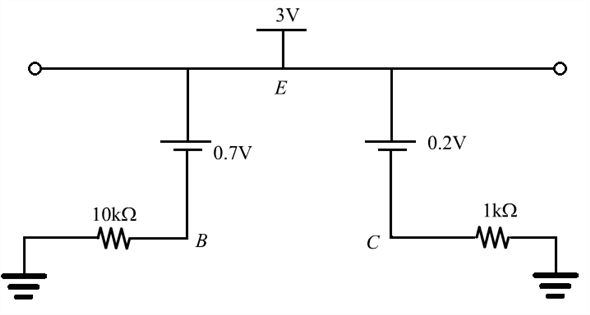

Refer to Figure P6.51 in the text book.
Apply Kirchhoff’s voltage law, to calculate the base current on the emitter side.
on the emitter side.
Hence, base current in the transistor is,
Refer to Figure P6.51 in the text book.
Apply Kirchhoff’s voltage law, to calculate the base current on the emitter side.
Hence, base current in the transistor is,
Calculate the collector current in the circuit.
Thus, the collector current in the circuit is, .
Apply Kirchhoff’s voltage law on collector side of the circuit.
Thus, the collector voltage is, .
Now is impossible as and it can’t be more than the supply voltage. Hence, we can conclude that transistor is in saturation.
The following is the equivalent circuit diagram:

Figure 2
Apply Kirchhoff’s voltage law to calculate the value of .

Thus, the value of the collector current is .
Calculate the value of collector voltage.
Therefore the value of the collector voltage is .
Apply Kirchhoff’s voltage law to calculate the value of .
Calculate the base current.
Calculate the value of the .
When the transistor is at the edge of saturation, the value of  is .
is .
Calculate the value of collector current.
Hence, the value of collector current when the transistor is in saturation is,  .
.
Calculate the value of base current .
Thus, the value of base current is, .
Now, Calculate the value of base resistance.

Thus, the base resistance of the circuit is, .